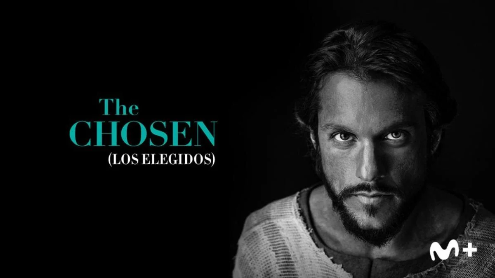
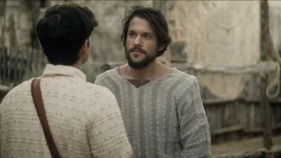
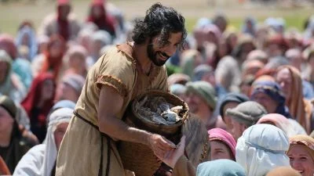
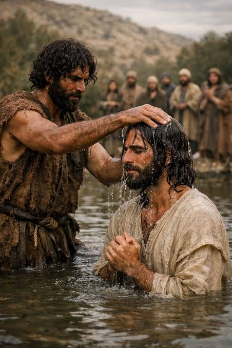
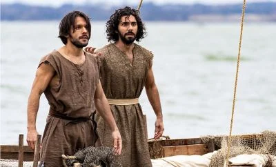
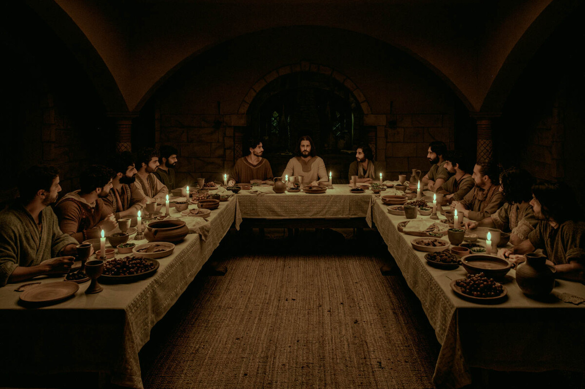
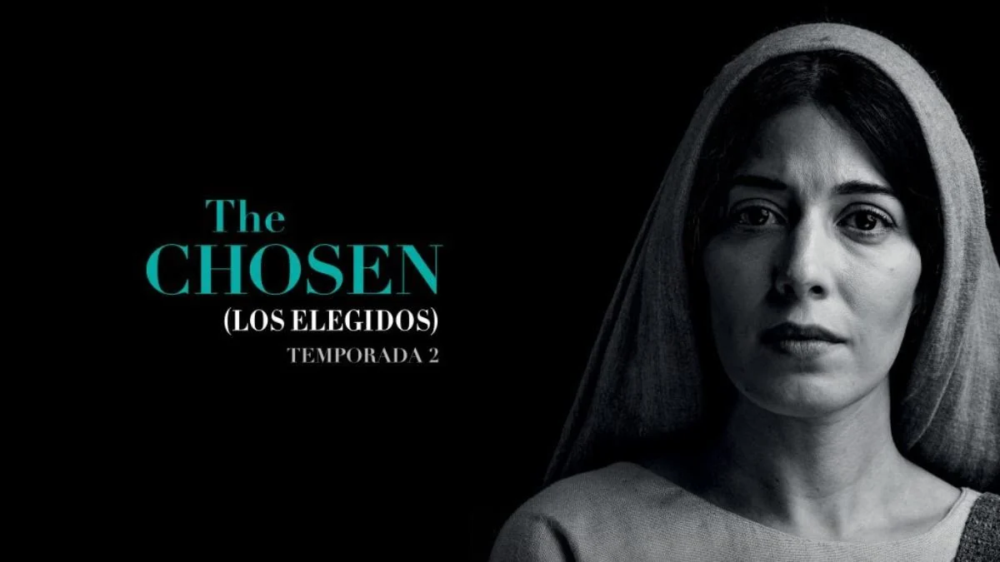

PortadaUna historia contada en viñetas.
Maquetación tipo Bento con grid anidado, celdas de distintos tamaños, variables en fichero aparte, CSS anidado, modo claro/oscuro y transiciones al pasar el ratón. En pantallas > 700px se muestran tres columnas; en pantallas menores se apilan.









